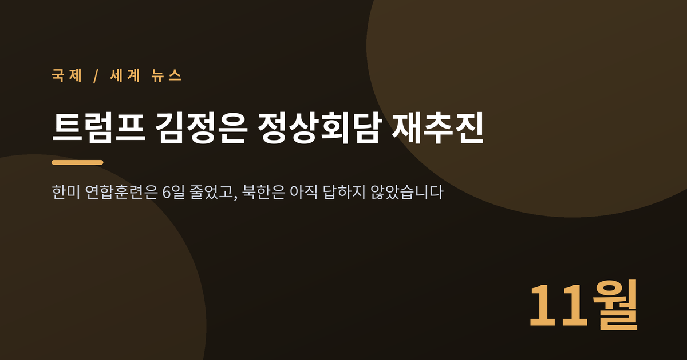
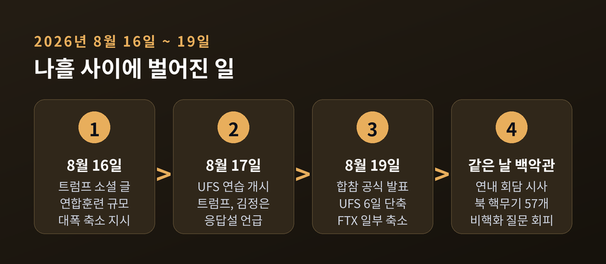
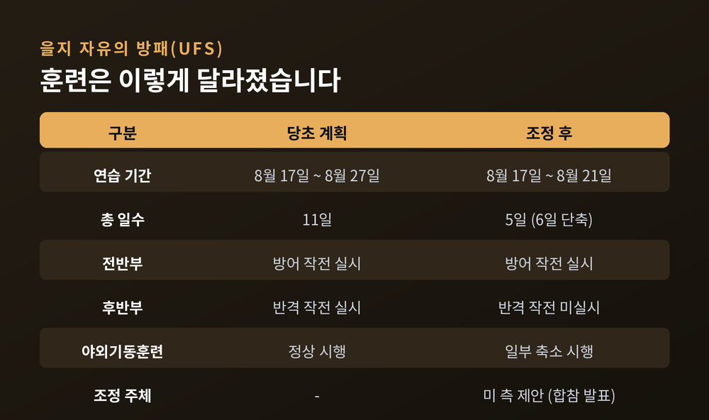
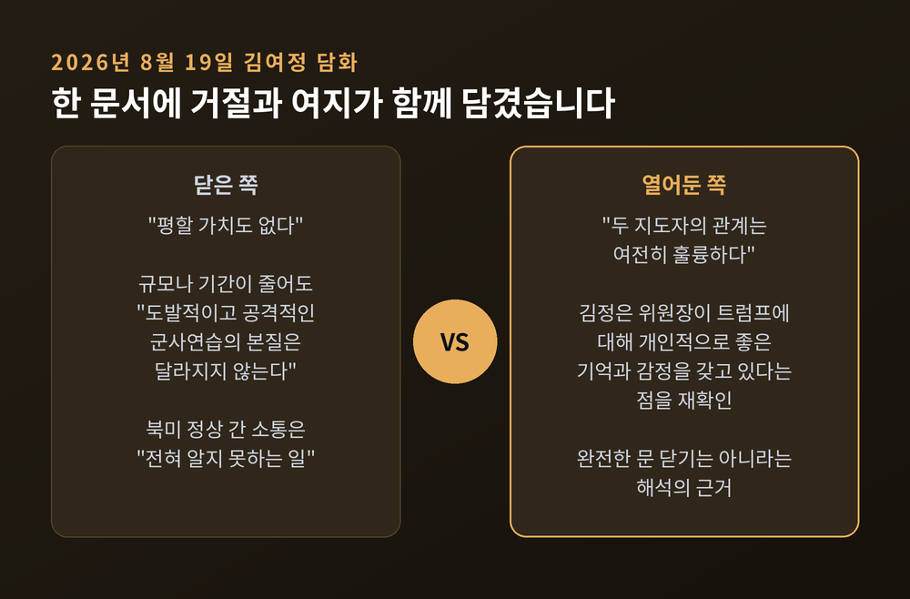
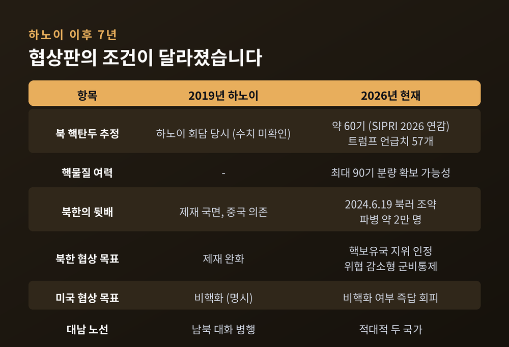
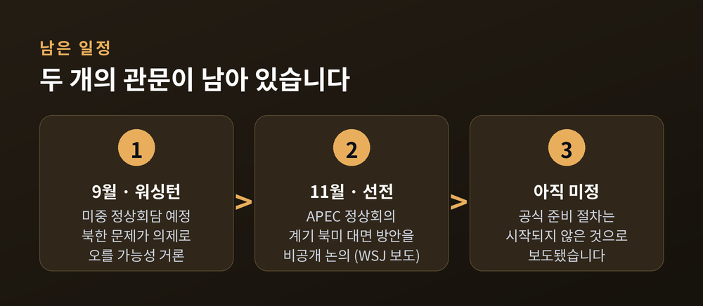

트럼프 김정은 정상회담 재추진, 한미 연합훈련 6일 단축된 이유

이번 글에서는 2026년 8월 셋째 주 한반도에서 벌어진 일을 정리해 보겠습니다. 트럼프 미국 대통령이 김정은 북한 국무위원장과의 정상회담 의사를 공개적으로 밝혔고, 그 직전 한미 연합훈련이 절반 넘게 줄었습니다. 어디까지가 확인된 사실이고 어디부터가 해석인지, 그리고 2019년 하노이 때와 무엇이 달라졌는지 차례로 짚어보려 합니다.
나흘 사이에 벌어진 일
시작은 8월 16일이었습니다.
트럼프 대통령이 소셜미디어 트루스소셜에 글을 올렸습니다. 피트 헤그세스 장관에게 한미 연합군사훈련의 규모를 "대폭 축소"하라고 지시했다는 내용이었습니다. 이유로는 김정은 위원장과 "매우 좋은 관계"를 맺고 있다는 점을 들었습니다. 연합훈련이 비용이 많이 들 뿐 아니라 북한에 "전적으로 부적절하고 적대적인 신호"를 보낸다고도 했습니다.
이튿날인 17일, 을지 자유의 방패(UFS) 연습은 예정대로 시작됐습니다. 같은 날 트럼프 대통령은 김 위원장이 자신의 대화 제안에 "응답했다"고 밝혔습니다. 다만 어떤 제안에, 언제, 어떤 방식으로 응답했는지는 공개하지 않았습니다.
19일 오전, 합동참모본부가 공지를 냈습니다. "한미는 미 측의 제안으로 연습 기간과 규모를 일부 조정하기로 했다"는 내용이었습니다. 당초 8월 17일부터 27일까지 11일간 예정됐던 UFS는 21일 종료로 앞당겨졌습니다. 6일이 잘려나간 셈입니다. 연합 야외기동훈련(FTX)도 일부 축소됐습니다.
트럼프 대통령의 지시부터 축소 확정까지 걸린 시간은 사흘이었습니다.
같은 날 저녁(현지시간) 트럼프 대통령은 백악관에서 기자들과 만났습니다. 올해 후반에 김정은 위원장을 만날 것으로 예상하느냐는 질문에 "그럴 것"이라고 답했습니다. 연내 회담 의사를 공개적으로 밝힌 것입니다.

훈련은 왜 '반토막'이 됐나
이번 축소가 단순한 일정 조정이 아니라는 평가가 나오는 이유는 내용에 있습니다.
보도에 따르면 전반부 방어 작전은 예정대로 진행됐지만, 후반부 반격 작전은 실시되지 않았습니다. 일부 훈련은 취소되거나 모의훈련으로 전환됐습니다. 연합훈련의 성격 자체가 달라진 것으로 볼 여지가 있습니다.
미 국방 당국은 훈련을 대폭 축소했으나 "어떤 차질도 없을 것"이라는 입장을 냈습니다. 안규백 국방부 장관도 전시작전통제권 전환 검증에는 영향이 없다는 취지로 설명했습니다.
반론도 만만치 않습니다. 반격 훈련이 빠지면 연합작전 숙달에 공백이 생긴다는 지적입니다. 국내에서는 사전 통보와 협의가 충분했는지를 두고 논쟁이 붙었습니다. 여당 쪽에서는 긴장 완화와 평화의 기회라는 평가가, 야당 쪽에서는 안보 상황이 엄중한데 한국이 협의에서 배제된 것 아니냐는 비판이 나왔습니다. 전작권 전환과 훈련 축소가 동시에 진행되면서 억제력이 유지되겠느냐는 물음도 제기됐습니다.
양쪽 주장 모두 근거가 있습니다. 아직 결론이 날 사안은 아닙니다.

북한의 답변 — 거절과 여지가 함께 있었다
8월 19일, 김여정 노동당 총무부장이 조선중앙통신을 통해 담화를 냈습니다.
훈련 축소에 대해서는 "평할 가치도 없다"고 했습니다. 규모나 기간이 줄어든다고 해서 "도발적이고 공격적인 군사연습의 본질이 달라지는 것은 아니다"라는 논리였습니다. 미국이 이를 "선의의 조치"로 선전하려 한다면 원하는 답을 얻지 못할 것이라고도 했습니다.
트럼프 대통령이 언급한 정상 간 소통에 대해서는 "전혀 알지 못하는 일"이라고 선을 그었습니다. "아마도 우리 최고지도부의 대외정책과 관련해 내가 알지 못하고 있는 유일한 사안일 것"이라는 표현을 덧붙였습니다.
여기까지만 보면 문을 닫은 것처럼 읽힙니다.
그런데 같은 담화에 다른 대목도 있었습니다. 김정은 위원장이 트럼프 대통령에 대해 개인적으로 좋은 기억과 감정을 갖고 있다는 점을 재확인하면서, "두 지도자의 관계는 여전히 훌륭하다"고 밝힌 것입니다.
거절과 여지가 한 문서 안에 함께 담겼습니다. 완전한 거부로 읽는 시각도, 몸값을 올리는 협상 전술로 읽는 시각도 모두 존재합니다. 현재로서는 어느 쪽으로도 단정하기 어렵습니다.

2019년 하노이와 무엇이 달라졌나
2019년 2월 27일과 28일, 베트남 하노이에서 열린 2차 북미정상회담은 합의 없이 끝났습니다. 미국은 영변 핵시설 폐기를 넘어서는 조치를 요구했고, 북한은 남북협력사업 제재 면제를 넘어서는 유엔 안보리 제재 완화를 요구했습니다. 접점은 없었습니다.
7년이 지난 지금, 협상판의 조건이 세 가지 면에서 달라졌습니다.
첫째, 북한이 가진 것이 늘었습니다. 스톡홀름국제평화연구소(SIPRI)는 지난 6월 발간한 2026년 연감에서 북한의 핵탄두를 약 60기로 추정했습니다. 1년 전 추정치 50기에서 10기 늘어난 숫자입니다. 핵분열성 물질은 최대 90기 분량을 확보했을 가능성이 있다고 봤습니다. 참고로 트럼프 대통령이 언급한 "57개"는 이 추정치와 크게 다르지 않습니다. 두 숫자 모두 추정이며, 북한이 공식 확인한 적은 없습니다.
둘째, 북한에 다른 선택지가 생겼습니다. 2024년 6월 19일 북한과 러시아는 '포괄적 전략적 동반자 관계에 관한 조약'을 체결했습니다. 유사시 군사적 지원 조항을 담은 것으로 알려졌습니다. 이후 북한은 약 2만 명 규모의 병력을 러시아·우크라이나 전선에 보내고 2만여 개 컨테이너 분량의 군수물자를 지원한 것으로 전해집니다. 2019년의 북한이 제재 해제를 절실히 원했다면, 지금의 북한은 그 절실함이 덜하다는 분석이 가능합니다.
셋째, 북한의 목표가 바뀌었습니다. 북한은 남북관계를 '적대적 두 국가'로 규정하는 노선을 유지하고 있습니다. 전문가들은 북한의 전략 목표를 비핵화 프레임의 원천 차단, 핵보유국 지위 공고화, 위협 감소 중심의 핵군비통제로 읽습니다. 김 위원장은 과거 미국이 "허황한 비핵화 집념"을 버리고 현실을 인정한다면 마주 앉지 못할 이유가 없다는 취지로 말한 바 있습니다.
미국 쪽에서도 미묘한 변화가 감지됩니다. 트럼프 대통령은 백악관에서 회담 목표가 여전히 비핵화인지 묻는 질문에 "그것에 대해서는 이야기하고 싶지 않다"며 답을 피했습니다. 언론과 전문가 사이에서는 목표가 비핵화에서 핵 동결로 옮겨가는 것 아니냐는 관측이 나왔습니다. 다만 미국이 공식적으로 정책을 바꿨다고 발표한 바는 없습니다. 여기까지는 해석의 영역입니다.

한국의 자리는 어디인가
한국 정부는 이번 국면을 대화의 기회로 보고 있습니다.
위성락 국가안보실장은 8월 18일 "북미 정상 간 우호적인 관계가 의미 있는 북미 대화로 이어졌으면 좋겠다"고 밝혔습니다. 한국이 '페이스 메이커'로서 외교적 노력을 하겠다는 취지도 함께 언급했습니다. 정부는 트럼프 대통령의 훈련 축소 지시를 한국에 대한 압박이라기보다 북한을 향한 유화 메시지로 해석한 것으로 보도됐습니다.
문제는 구조입니다.
북한은 남한을 대화 상대에서 사실상 배제하는 노선을 유지하고 있습니다. 북미가 직접 만나는 구도가 만들어지면 한국이 협상 테이블 밖에 서게 될 가능성이 있습니다. 전문가들은 북한이 러시아에 이어 중국과도 전략적 관계를 다지면서 한국의 외교적 공간이 좁아지고 있다고 분석합니다.
그렇다고 대화를 반대할 처지도 아닙니다. 긴장이 낮아지는 것 자체는 한국에 이롭기 때문입니다. 다만 그 대화의 결과가 '핵을 가진 북한을 인정하는 합의'로 귀결된다면, 한국이 감당해야 할 안보 부담은 달라집니다.
경향신문이 전한 전문가 제언은 이렇습니다. 비핵화 목표는 유지하되, 군사적 긴장을 관리하면서 남북 대화와 협력을 함께 추진하는 장기적 접근이 필요하다는 것입니다. 말은 간단하지만 실행은 어렵습니다.
앞으로 두 개의 관문
회담이 실제로 열릴지는 아직 알 수 없습니다.
월스트리트저널은 미국 당국자들을 인용해, 트럼프 대통령이 참모들에게 이르면 올가을 회담을 추진하도록 압박하고 있다고 보도했습니다. 참모들은 11월 중국 선전에서 열리는 APEC 정상회의를 계기로 대면 회담을 여는 방안을 비공개로 논의해 왔다고 전해집니다. 다만 같은 보도는 회담 개최를 위한 공식 준비 절차가 아직 시작되지 않았다는 점도 함께 짚었습니다.
일정상 먼저 오는 관문은 9월입니다. 시진핑 중국 국가주석이 워싱턴을 방문해 트럼프 대통령과 정상회담을 갖는 것으로 알려졌습니다. 김 위원장은 앞서 지난 6월 시 주석과 만난 바 있습니다. 중국이 북한의 최대 교역국이자 전통 우방이라는 점에서, 9월 회담에서 북한 문제가 논의될 가능성이 거론됩니다. 왕이 중국 외교부장은 북미 회담에 대해 "북미가 결정할 일"이라는 취지로 말했습니다.
9월 미중 정상회담이 전초전이고, 11월 선전 APEC이 본무대가 되는 구도입니다.
낙관론은 이렇습니다. 두 정상 모두 만남 자체에 정치적 유인이 있고, 훈련 축소라는 실물 조치가 이미 나왔으며, 중국이 중재 여지를 열어두고 있습니다.
회의론은 이렇습니다. 북한은 공식적으로 소통 사실을 부인했고, 비핵화라는 의제 자체에 합의가 없으며, 실무 협상 채널의 가동 여부도 확인되지 않았습니다. 하노이의 기억도 남아 있습니다.

정리하면 이렇습니다.
확인된 사실은 세 가지입니다. 트럼프 대통령이 연합훈련 축소를 지시했고, UFS가 실제로 6일 단축됐으며, 트럼프 대통령이 연내 회담 의사를 공개적으로 밝혔다는 것입니다. 나머지는 아직 관측과 해석의 영역에 있습니다.
한 가지만 덧붙이겠습니다. 2018년의 판과 지금의 판은 같은 이름의 다른 게임입니다. 그때는 '핵을 없애는 협상'이었고, 지금은 무엇을 놓고 앉을지조차 정해지지 않았습니다.
회담이 열릴 것이냐고 물으신다면, 아직 답할 단계가 아니라고 말씀드리겠습니다. 다만 9월과 11월, 두 번의 장면은 지켜볼 만합니다.